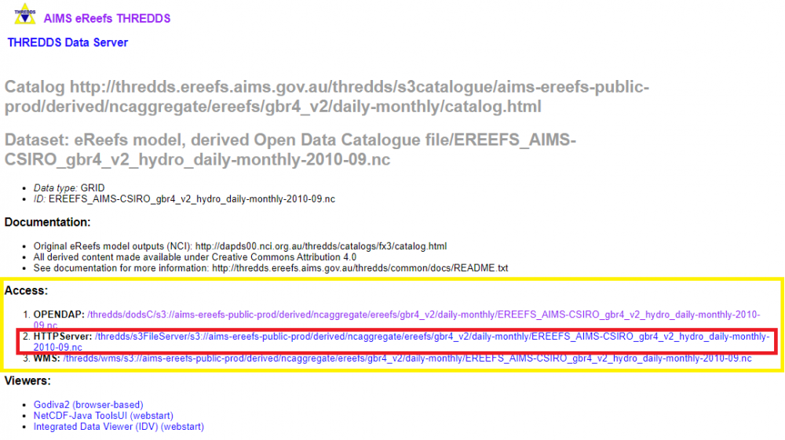
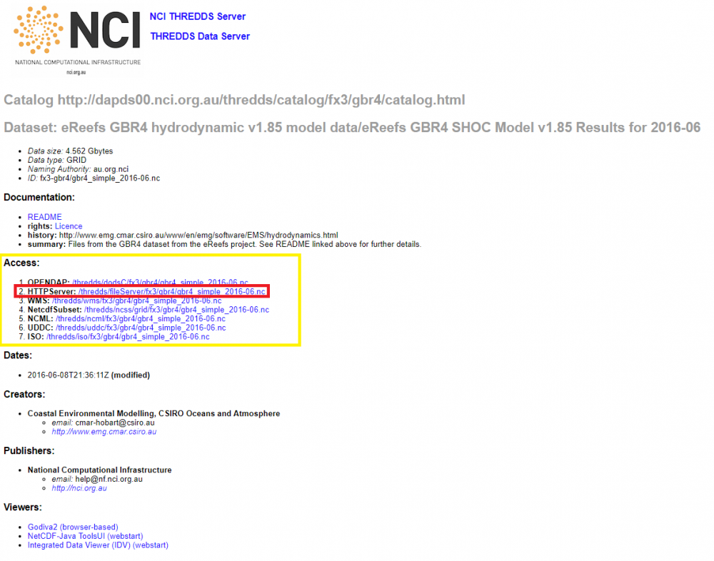

How to manually download AIMS eReefs data
The eReefs model data is produced by CSIRO and published on the NCI THREDDS server (see section Download eReefs model data from NCI THREDDS server). For the visualisations on this portal, the AIMS eReefs system downloads, processes and aggregates the raw eReefs model data to provide multiple time steps (e.g. monthly, yearly) and to transform the data from a curvilinear to a rectilinear grid. While the curvilinear grid in the raw eReefs model data is better suited to the modelling and execution requirements, it can be cumbersome to process with typical data science tools. Therefore, all eReefs derived datasets generated by the AIMS eReefs system are regridded to a rectilinear grid.
All derived data produced by the AIMS eReefs system can be found on the AIMS eReefs THREDDS server. To download the data follow these steps:
- Open the AIMS eReefs THREDDS server website and select the link Data derived from the eReefs model.
- On the next page select the link to the required model
- GBR4_H2p0_B3p1_Cq3P_Dhnd := eReefs BioGeoChemical model version 3.1 (4 km resolution) - source catchments using Pre-Industrial catchment conditions
- GBR4_H2p0_B3p1_Cq3R_Dhnd := eReefs BioGeoChemical model version 3.1 (4 km resolution) - source catchments using Hindcast catchment conditions (anthropogenic loads reduced according to the percentage reductions of DIN, PN, PP and TSS specified in the Reef 2050 Water Quality Improvement Plan 2017-2022)
- GBR4_H2p0_B3p1_Cq3b_Dhnd := eReefs BioGeoChemical model version 3.1 (4 km resolution) - source catchments using Baseline catchment conditions.
- gbr1_2.0 := eReefs Hydrodynamic model version 2.0 (1 km resolution)
- gbr4_v2 := Reefs Hydrodynamic model version 2.0 (4 km resolution)
- Each model has its derived output grouped into folders with the names indicating the time steps and aggregation in a file. For example a folder with the name "daily-monthly" contains "monthly" files with "daily" data while a folder with the name "annual-annual" contains "annual" files with "annual" data. Select the link to the folder of interest.
- In the list of NetCDF files, select the one of interest. The file names describe the data they contain with the structure "EREEFS_organisations_model_timestep-aggregation-date.nc". For example the file "EREEFS_AIMS-CSIRO_gbr4_v2_hydro_daily-monthly-2010-09.nc" can be broken down into:
"AIMS-CSIRO" := Reference to the organisations AIMS and CSIRO
"gbr4_v2_hydro" := eReefs Hydrodynamic model version 2.0 (4 km resolution)
"daily" := "daily" data
"monthly" := one month of data
"2010-09" := data for September 2010 - The single file pages contain a section "Access". For downloading the NetCDF file select the link for the "HTTPServer"

Download eReefs model data from NCI THREDDS server
Please be advised that AIMS does not manage this service and therefore we cannot guaranty the correctness of this article.
To download the raw eReefs data follow these steps:
- Open the NCI THREDDS server website
- Select the link to the required model
- In the list of NetCDF files, select the one of interest
- The single file pages contain a section "Access". For downloading the NetCDF file select the link for the "HTTPServer"
